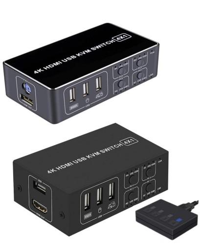
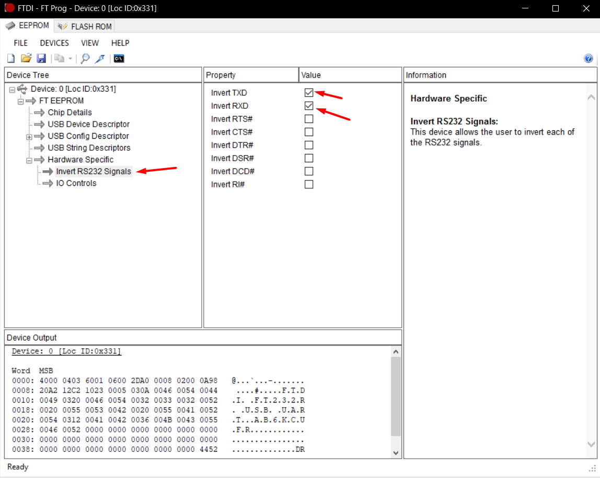

XH-HK4401 4-port HDMI USB KVM Switch¶

This KVM is sold under many names, and comes in two versions. The only way these two versions differ is that one has one of its USB ports replaced with a PS/2 port. The identifying feature is that they come with a small external control unit with 4 buttons. This controller is connected to the main KVM via a micro USB cable, however this is NOT as USB connection.
Warning
Audio was not tested, it is assumed to be non-functional
Connections¶
-
Connect the USB-A cable from the Raspberry Pi OTG port to to any of the USB ports on the XH-HK4401 switch. All 3/4 USB ports work exactly the same, internally they are just connected to a USB HUB.
-
Connect the HDMI out from the XH-HK4401 switch to the Raspberry Pi CSI-2 to HDMI input.
-
Connect host USB and HDMI cables from the XH-HK4401 switch to the machines to be managed per the switch instructions.
-
Finally see below for details about connecting to the control micro USB port. This it not a normal USB micro port.
Warning
There is a limitation in the underlying PiKVM software related to plugging video cables from a host which is already powered and connected to a monitor to a Raspberry Pi HDMI-CSI bridge. These limitations apply equally when using the XH-HK4401 KVM switch. If video is not present in PiKVM, try keeping all host machines off and connecting them directly to the XH-HK4401 switch before powering the hosts on.
RS-232 control cable¶
The control unit communicates to the KVM using the RS-232 protocol (at 5v) not USB, and one of the following solutions must be used.
Inverting USB UART adapter (FT-232) - The easy way¶
Some USB UART adapters have the rare feature to invert the logic level of the RX/TX signals. For example the FTDI FT232 can be configured via the FTDI configuration GUI to do this. With such an adapter, the circuit above is not required. All you need is to connect it to a micro-USB connector.
Warning
These options will only work on UART adapters with genuine FTDI chips. There are a lot of cheap fakes on the market that either lack this option, or will prevent you from changing the settings. To avoid getting a fake ensure you always purchase from a reputable store and brand (Adafruit, Sparkfun, etc.), Amazon is not a reputable store.
In order to invert the RX/TX signals, you can use ft_prog and set the following settings:

Once the UART is configured, please fully disconnect it and connect it back to the computer. Relaunch ft_prog and ensure the settings are still set. If they are not, you have a fake FTDI chip.
Finally, you will need to connect it to the micro USB port (This it not a normal USB micro port.) like so:
| Signal | Colour | FT232 Pin |
|---|---|---|
| Vbus | Red | 5v (if you want to power the KVM from the Pi's USB) |
| D- | White | RX |
| D+ | Green | TX |
| Gnd | Black | GND |
An inverter circuit - The cheap way¶
For this you will need:
- 1x 74HC14
- 1x USB A socket, or sacrificial micro USB cable
- Optional 1x Diode - If you want to power the KVM from the Raspberry Pi
- 1x 5-pin header
- 5x Female - Female jumper cables

Note
Please search online for USB pinouts to ensure you connect it properly.
Adding UI elements to control the KVM switch¶
The UI can be updated to add buttons to switch between KVM inputs and indicators for which input is currently selected. The instructions below will make these available in the PiKVM UI after clicking the "GPIO" menu button in the KVM view.
-
SSH into PiKVM
-
Enable read-write mode on the sd card via
rw -
Edit the
/etc/kvmd/override.yamlfile and include the following.
| Method | Device |
|---|---|
| FT-232 | /dev/ttyUSB0 |
| Inverter | /dev/ttyAMA0 |
```yaml
kvmd:
gpio:
drivers:
hk:
type: xh_hk4401
device: /dev/ttyUSB0
scheme:
ch0_led:
driver: hk
pin: 0
mode: input
ch1_led:
driver: hk
pin: 1
mode: input
ch2_led:
driver: hk
pin: 2
mode: input
ch3_led:
driver: hk
pin: 3
mode: input
ch0_button:
driver: hk
pin: 0
mode: output
switch: false
ch1_button:
driver: hk
pin: 1
mode: output
switch: false
ch2_button:
driver: hk
pin: 2
mode: output
switch: false
ch3_button:
driver: hk
pin: 3
mode: output
switch: false
view:
table:
- ["#Input 1", ch0_led, ch0_button]
- ["#Input 2", ch1_led, ch1_button]
- ["#Input 3", ch2_led, ch2_button]
- ["#Input 4", ch3_led, ch3_button]
```
-
Return to read-only mode for the sd card via
ro -
Restart the kvmd service:
systemctl restart kvmd
Switching between hosts in the UI¶
To switch between hosts, enter the KVM UI and click the "GPIO" menu. You should see 4 inputs, one of which will have a green circle indicating it is currently selected. Click the other inputs to change the selected host.